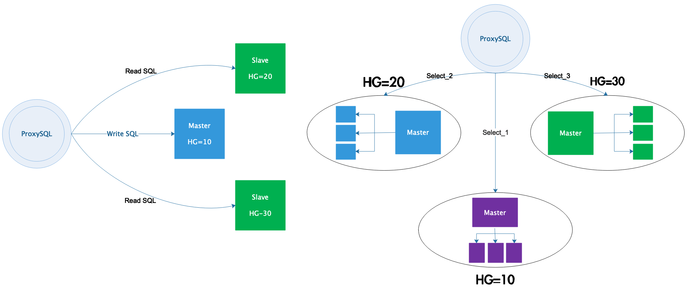

mysqlä¸é—´ä»¶proxysqlå®�ç�°mysql读写分离
- 1. mysql��读写分离的方�
- 2. ProxySQL简介
- 3. ProxySQL安装
- 4. ProxySQL的Admin管���
- 5. 和admin管���相关的��
- 6. 多层�置系统
- 7. ��类�的读写分离方案解�
- 8. ProxySQL��读写分离示例
1. mysql��读写分离的方�
mysql å®�ç�°è¯»å†™åˆ†ç¦»çš„æ–¹å¼�æœ‰ä»¥ä¸‹å‡ ç§�：
- 程�修改mysql�作，直�和数�库通信，简�快�的读写分离和�机的方���的负载�衡，��独立分�，需�开�人员�助。
- amoeba，直æ�¥å®�ç�°è¯»å†™åˆ†ç¦»å’Œè´Ÿè½½å�‡è¡¡ï¼Œä¸�用修改代ç �，有很ç�µæ´»çš„æ•°æ�®è§£å†³æ–¹æ¡ˆï¼Œè‡ªå·±åˆ†é…�账户，和å��端数æ�®åº“æ�ƒé™�管ç�†ç‹¬ç«‹ï¼Œæ�ƒé™�处ç�†ä¸�够ç�µæ´»ã€‚
- mysql-proxy，直æ�¥å®�ç�°è¯»å†™åˆ†ç¦»å’Œè´Ÿè½½å�‡è¡¡ï¼Œä¸�用修改代ç �，masterå’Œslaveç”¨ä¸€æ ·çš„å¸�å�·ï¼Œæ•ˆç�‡ä½�
- mycatä¸é—´ä»¶
- proxysqlä¸é—´ä»¶ï¼ˆæ�¨è��使用）
2. ProxySQL简介
ProxySQL 是一款å�¯ä»¥å®�际用äº�生产ç�¯å¢ƒçš„ MySQL ä¸é—´ä»¶ï¼Œå®ƒæœ‰å®˜æ–¹ç‰ˆå’Œ percona 版两ç§�。perconaç‰ˆæ˜¯åœ¨å®˜æ–¹ç‰ˆçš„åŸºç¡€ä¸Šä¿®æ”¹çš„ï¼Œæ·»åŠ äº†å‡ ä¸ªæ¯”è¾ƒå®�用的工具。生产ç�¯å¢ƒå»ºè®®ç”¨å®˜æ–¹ç‰ˆã€‚
ProxySQL 是用 C++ è¯è¨€å¼€å�‘的，虽然也是一个轻é‡�级产å“�，但性能很好(æ�®æµ‹è¯•ï¼Œèƒ½å¤„ç�†å�ƒäº¿çº§çš„æ•°æ�®)，功能也足够，能满足ä¸é—´ä»¶æ‰€éœ€çš„ç»�大多数功能，包括：
- 最基本的读/写分离，且方�有多�
- å�¯å®šåˆ¶åŸºäº�用户ã€�基äº�schemaã€�基äº�è¯å�¥çš„规则对SQLè¯å�¥è¿›è¡Œè·¯ç”±ã€‚æ�¢å�¥è¯�说，规则很ç�µæ´»ã€‚基äº�schemaå’Œä¸�è¯å�¥çº§çš„规则，å�¯ä»¥å®�ç�°ç®€å�•çš„sharding(分库分表)
- å�¯ç¼“å˜æŸ¥è¯¢ç»“æ�œã€‚虽然ProxySQL的缓å˜ç–略比较简陋，但å®�ç�°äº†åŸºæœ¬çš„缓å˜åŠŸèƒ½ï¼Œç»�大多数时候也够用了。æ¤å¤–，作者已ç»�打算å®�ç�°æ›´ä¸°å¯Œçš„缓å˜ç–ç•¥
- 监æ�§å��端节点。ProxySQLå�¯ä»¥ç›‘æ�§å��ç«¯èŠ‚ç‚¹çš„å¤šä¸ªæŒ‡æ ‡ï¼ŒåŒ…æ‹¬ï¼šProxySQLå’Œå��端的心跳信æ�¯ï¼Œå��端节点的read-only/read-write，slaveå’Œmasterçš„æ•°æ�®å�Œæ¥å»¶è¿Ÿæ€§(replication lag)
3. ProxySQL安装
//�置yum�
[root@proxysql ~]# cat <<EOF | tee /etc/yum.repos.d/proxysql.repo
[proxysql_repo]
name= ProxySQL
baseurl=http://repo.proxysql.com/ProxySQL/proxysql-1.4.x/centos/7
gpgcheck=1
gpgkey=http://repo.proxysql.com/ProxySQL/repo_pub_key
EOF
[root@proxysql ~]# yum -y install proxysql
4. ProxySQL的Admin管���
当 ProxySQL �动�，将监�两个端�：
- admin管���，默认端�为6032。该端�用�查看��置ProxySQL
- æ�¥æ”¶SQLè¯å�¥çš„æ�¥å�£ï¼Œé»˜è®¤ç«¯å�£ä¸º6033，这个æ�¥å�£ç±»ä¼¼äº�MySQLçš„3306端å�£

ProxySQL çš„ admin 管ç�†æ�¥å�£æ˜¯ä¸€ä¸ªä½¿ç”¨ MySQL å��议的æ�¥å�£ï¼Œæ‰€ä»¥ï¼Œå�¯ä»¥ç›´æ�¥ä½¿ç”¨ mysql 客户端ã€�navicat ç‰å·¥å…·å�»è¿�æ�¥è¿™ä¸ªç®¡ç�†æ�¥å�£ï¼Œå…¶é»˜è®¤çš„用户å��和密ç �å�‡ä¸º admin
例如，使用 mysql 客户端��� ProxySQL 的管���：
[root@proxysql ~]# mysql -uadmin -padmin -h127.0.0.1 -P6032
Welcome to the MariaDB monitor. Commands end with ; or \g.
Your MySQL connection id is 6
Server version: 5.5.30 (ProxySQL Admin Module)
Copyright (c) 2000, 2018, Oracle, MariaDB Corporation Ab and others.
Type 'help;' or '\h' for help. Type '\c' to clear the current input statement.
MySQL [(none)]> show databases;
+-----+---------------+-------------------------------------+
| seq | name | file |
+-----+---------------+-------------------------------------+
| 0 | main | |
| 2 | disk | /var/lib/proxysql/proxysql.db |
| 3 | stats | |
| 4 | monitor | |
| 5 | stats_history | /var/lib/proxysql/proxysql_stats.db |
+-----+---------------+-------------------------------------+
5 rows in set (0.00 sec)
ç”±äº� ProxySQL çš„é…�置全部ä¿�å˜åœ¨å‡ 个自带的库ä¸ï¼Œæ‰€ä»¥é€šè¿‡ç®¡ç�†æ�¥å�£ï¼Œå�¯ä»¥é��常方便地通过å�‘é€�一些SQL命令å�»ä¿®æ”¹ ProxySQL çš„é…�置。 ProxySQL 会解æ��通过该æ�¥å�£å�‘é€�çš„æŸ�些对ProxySQL 有效的特定命令，并将其å�ˆç�†è½¬æ�¢å��å�‘é€�给内嵌的 SQLite3 æ•°æ�®åº“引æ“�å�»è¿�è¡Œ
ProxySQL çš„é…�ç½®å‡ ä¹�都是通过管ç�†æ�¥å�£æ�¥æ“�作的，通过 Admin 管ç�†æ�¥å�£ï¼Œå�¯ä»¥åœ¨çº¿ä¿®æ”¹å‡ ä¹�所有的é…�置并使其生效。å�ªæœ‰ä¸¤ä¸ªå�˜é‡�çš„é…�置是必须é‡�å�¯ ProxySQL æ‰�能生效的，它们是：
mysql-threads 和 mysql-stacksize
5. 和admin管���相关的��
5.1 admin-admin_credentials
admin-admin_credentials å�˜é‡�æ�§åˆ¶çš„是admin管ç�†æ�¥å�£çš„管ç�†å‘˜è´¦æˆ·ã€‚默认的管ç�†å‘˜è´¦æˆ·å’Œå¯†ç �为admin:admin，但是这个默认的用户å�ªèƒ½åœ¨æœ¬åœ°ä½¿ç”¨ã€‚如æ�œæƒ³è¦�远程è¿�æ�¥åˆ°ProxySQL，例如用windows上的navicatè¿�æ�¥Linux上的ProxySQL管ç�†æ�¥å�£ï¼Œå¿…须自定义一个管ç�†å‘˜è´¦æˆ·ã€‚
æ·»åŠ ç®¡ç�†å‘˜å¸�户
MySQL [(none)]> select @@admin-admin_credentials; //查看当å‰�用户å��和密ç �
+---------------------------+
| @@admin-admin_credentials |
+---------------------------+
| admin:admin |
+---------------------------+
1 row in set (0.01 sec)
//设置管ç�†å‘˜å¸�å�·myadmin,密ç �wangqing123!
MySQL [(none)]> set admin-admin_credentials='admin:admin;myadmin:wangqing123!';
Query OK, 1 row affected (0.00 sec)
MySQL [(none)]> select @@admin-admin_credentials;
+----------------------------------+
| @@admin-admin_credentials |
+----------------------------------+
| admin:admin;runtime:wangqing123! |
+----------------------------------+
1 row in set (0.00 sec)
MySQL [(none)]> load admin variables to runtime; //使修改立�生效
Query OK, 0 rows affected (0.01 sec)
MySQL [(none)]> save admin variables to disk; //使修改永久ä¿�å˜åˆ°ç£�盘
Query OK, 31 rows affected (0.00 sec)
修改å��，就å�¯ä»¥ä½¿ç”¨è¯¥ç”¨æˆ·å��和密ç �è¿�æ�¥ç®¡ç�†æ�¥å�£
[root@proxysql ~]# mysql -umyadmin -pwangqing123! -h172.16.12.128 -P6032
Welcome to the MariaDB monitor. Commands end with ; or \g.
Your MySQL connection id is 7
Server version: 5.5.30 (ProxySQL Admin Module)
Copyright (c) 2000, 2018, Oracle, MariaDB Corporation Ab and others.
Type 'help;' or '\h' for help. Type '\c' to clear the current input statement.
MySQL [(none)]>
所有的é…�ç½®æ“�作都是在修改main库ä¸å¯¹åº”的表
MySQL [(none)]> select * from global_variables where variable_name='admin-admin_credentials';
+-------------------------+----------------------------------+
| variable_name | variable_value |
+-------------------------+----------------------------------+
| admin-admin_credentials | admin:admin;myadmin:wangqing123! |
+-------------------------+----------------------------------+
1 row in set (0.00 sec)
å¿…é¡»è¦�区分admin管ç�†æ�¥å�£çš„用户å��å’Œmysql_usersä¸çš„用户å��
- admin管���的用户是��到管���(默认端�6032)上用�管���置ProxySQL的
- mysql_users表ä¸çš„用户å��是应用程åº�è¿�æ�¥ProxySQL(默认端å�£6033)，以å�ŠProxySQLè¿�æ�¥å��端MySQL Servers使用的用户。它的作用是å�‘é€�ã€�路由SQLè¯å�¥ï¼Œç±»ä¼¼äº�MySQL Serverçš„3306端å�£ã€‚所以，这个表ä¸çš„用户必须已ç»�在å��端MySQL Server上å˜åœ¨ä¸”æ�ˆæ�ƒäº†
admin管ç�†æ�¥å�£çš„用户必须ä¸�能å˜åœ¨äº�mysql_usersä¸ï¼Œè¿™æ˜¯å‡ºäº�安全的考虑，防æ¢é€šè¿‡admin管ç�†æ�¥å�£ç”¨æˆ·çŒœå‡ºmysql_usersä¸çš„用户
5.2 admin-stats_credentials
admin-stats_credentials å�˜é‡�æ�§åˆ¶admin管ç�†æ�¥å�£çš„普通用户，这个å�˜é‡�ä¸çš„用户没有超级管ç�†å‘˜æ�ƒé™�，å�ªèƒ½æŸ¥çœ‹monitor库和main库ä¸å…³äº�统计的数æ�®ï¼Œå…¶å®ƒåº“都是ä¸�å�¯è§�的，且没有任何写æ�ƒé™�
默认的普通用户å��和密ç �å�‡ä¸º stats ，ä¸�adminä¸€æ ·ï¼Œå®ƒé»˜è®¤ä¹Ÿå�ªèƒ½ç”¨äº�本地登录，若想让人远程查看则è¦�æ·»åŠ æŸ¥çœ‹çš„ä¸“æœ‰ç”¨æˆ·
MySQL [(none)]> select @@admin-stats_credentials;
+---------------------------+
| @@admin-stats_credentials |
+---------------------------+
| stats:stats |
+---------------------------+
1 row in set (0.00 sec)
//æ·»åŠ ä¸“æœ‰çš„æŸ¥çœ‹ç”¨æˆ·
MySQL [(none)]> set admin-stats_credentials='stats:stats;mystats:wangqing123!';
Query OK, 1 row affected (0.00 sec)
MySQL [(none)]> select @@admin-stats_credentials;
+----------------------------------+
| @@admin-stats_credentials |
+----------------------------------+
| stats:stats;mystats:wangqing123! |
+----------------------------------+
1 row in set (0.00 sec)
MySQL [(none)]> load admin variables to runtime;
Query OK, 0 rows affected (0.00 sec)
MySQL [(none)]> save admin variables to disk;
Query OK, 31 rows affected (0.00 sec)
å�Œæ ·ï¼Œè¿™ä¸ªå�˜é‡�ä¸çš„用户必须ä¸�能å˜åœ¨äº�mysql_users表ä¸
使用mystats用户远程��查看
[root@proxysql ~]# mysql -umystats -pwangqing123! -h172.16.12.128 -P6032
Welcome to the MariaDB monitor. Commands end with ; or \g.
Your MySQL connection id is 11
Server version: 5.5.30 (ProxySQL Admin Module)
Copyright (c) 2000, 2018, Oracle, MariaDB Corporation Ab and others.
Type 'help;' or '\h' for help. Type '\c' to clear the current input statement.
MySQL [(none)]>
MySQL [(none)]> show tables from main;
+--------------------------------------+
| tables |
+--------------------------------------+
| global_variables |
| stats_memory_metrics |
| stats_mysql_commands_counters |
| stats_mysql_connection_pool |
| stats_mysql_connection_pool_reset |
| stats_mysql_global |
| stats_mysql_prepared_statements_info |
| stats_mysql_processlist |
| stats_mysql_query_digest |
| stats_mysql_query_digest_reset |
| stats_mysql_query_rules |
| stats_mysql_users |
| stats_proxysql_servers_checksums |
| stats_proxysql_servers_metrics |
| stats_proxysql_servers_status |
+--------------------------------------+
15 rows in set (0.00 sec)
5.3 admin-mysql_ifaces
admin-mysql_ifaces å�˜é‡�指定adminæ�¥å�£çš„监å�¬åœ°å�€ï¼Œæ ¼å¼�为冒å�·åˆ†éš”çš„hostname:port列表。默认监å�¬åœ¨ 0.0.0.0:6032
注æ„�，å…�许使用UNIXçš„domain socket进行监å�¬ï¼Œè¿™æ ·æœ¬ä¸»æœºå†…的应用程åº�å°±å�¯ä»¥ç›´æ�¥è¢«å¤„ç�†ã€‚
例如：
MySQL [(none)]> SET admin-mysql_ifaces='0.0.0.0:6032;/tmp/proxysql_admin.sock';
Query OK, 1 row affected (0.00 sec)
MySQL [(none)]> load admin variables to runtime;
Query OK, 0 rows affected (0.00 sec)
MySQL [(none)]> save admin variables to disk;
Query OK, 31 rows affected (0.00 sec)
6. 多层�置系统
6.1 proxysqlä¸çš„库
使用ProxySQL的Admin管����上ProxySQL，�查看ProxySQL拥有的库
[root@proxysql ~]# mysql -umyadmin -pwangqing123! -h172.16.12.128 -P6032
Welcome to the MariaDB monitor. Commands end with ; or \g.
Your MySQL connection id is 14
Server version: 5.5.30 (ProxySQL Admin Module)
Copyright (c) 2000, 2018, Oracle, MariaDB Corporation Ab and others.
Type 'help;' or '\h' for help. Type '\c' to clear the current input statement.
MySQL [(none)]> show databases;
+-----+---------------+-------------------------------------+
| seq | name | file |
+-----+---------------+-------------------------------------+
| 0 | main | |
| 2 | disk | /var/lib/proxysql/proxysql.db |
| 3 | stats | |
| 4 | monitor | |
| 5 | stats_history | /var/lib/proxysql/proxysql_stats.db |
+-----+---------------+-------------------------------------+
5 rows in set (0.00 sec)
å…¶ä¸ï¼š
- main库是ProxySQL最主è¦�的库，是需è¦�修改é…�置时使用的库，它其å®�是一个内å˜æ•°æ�®åº“系统。所以，修改main库ä¸çš„é…�ç½®å��，必须将其æŒ�久化到disk上æ‰�能永久ä¿�å˜
- disk库是ç£�盘数æ�®åº“，该数æ�®åº“结æ�„和内å˜æ•°æ�®åº“完全一致。当æŒ�久化内å˜æ•°æ�®åº“ä¸çš„é…�置时，其å®�就是写入到disk库ä¸ã€‚ç£�盘数æ�®åº“的默认路径为 $DATADIR/proxysql.db
- stats库是统计信æ�¯åº“。这个库ä¸çš„æ•°æ�®ä¸€èˆ¬æ˜¯åœ¨æ£€ç´¢å…¶å†…æ•°æ�®æ—¶ä¸´æ—¶å¡«å……的，它ä¿�å˜åœ¨å†…å˜ä¸ã€‚å› ä¸ºæ²¡æœ‰ç›¸å…³çš„é…�ç½®é¡¹ï¼Œæ‰€ä»¥æ— éœ€æŒ�久化
- monitor库是监æ�§å��端MySQL节点相关的库，该库ä¸å�ªæœ‰å‡ 个log类的表，监æ�§æ¨¡å�—收集到的监æ�§ä¿¡æ�¯å…¨éƒ½å˜æ”¾åˆ°å¯¹åº”çš„log表ä¸
- stats_history库是1.4.4版新å¢�的库，用äº�å˜æ”¾å�†å�²ç»Ÿè®¡æ•°æ�®ã€‚默认路径为 $DATADIR/proxysql_stats.db
ProxySQL 内部使用的是 SQLite3 æ•°æ�®åº“ï¼Œæ— è®ºæ˜¯å†…å˜æ•°æ�®åº“还是ç£�盘数æ�®åº“，都是通过SQLite3引 æ“�进行解æ��ã€�æ“�作的。它和 MySQL çš„è¯æ³•å�¯èƒ½ç¨�有ä¸�å�Œï¼Œä½†ProxySQL会对ä¸�兼容的è¯æ³•è‡ªåŠ¨è¿›è¡Œè°ƒæ•´ï¼Œæœ€å¤§ç¨‹åº¦ä¸Šä¿�è¯�MySQLè¯å�¥çš„有效ç�‡ã€‚
上é�¢æ��è¿°main库的时候，å�ªæ˜¯è¯´äº†å†…å˜æ•°æ�®åº“需è¦�æŒ�久化到disk库æ‰�能永久ä¿�å˜é…�置。但å®�际上，修改了main库ä¸çš„é…�ç½®å��，并ä¸�会立å�³ç”Ÿæ•ˆï¼Œå®ƒè¿˜éœ€è¦�load到runtimeçš„æ•°æ�®ç»“æ�„ä¸æ‰�生效，å�ªæœ‰åœ¨runtimeæ•°æ�®ç»“æ�„ä¸çš„é…�ç½®æ‰�是对ProxySQL当å‰�有效的é…�ç½®
6.2 ProxySQL多层�置系统
ProxySQL çš„é…�置系统é��å¸¸å¼ºå¤§ï¼Œå®ƒèƒ½åœ¨çº¿ä¿®æ”¹å‡ ä¹�所有é…�ç½®(仅有的两个需è¦�é‡�å�¯æ‰�能生效的å�˜é‡�为 mysql-threads å’Œ mysql-stacksize )，并在线生效ã€�æŒ�久化ä¿�å˜ã€‚这得益äº�它采用的多层é…�置系统。
多层�置系统结�如下：
+-------------------------+
| RUNTIME |
+-------------------------+
/|\ |
| |
[1] | [2] |
| \|/
+-------------------------+
| MEMORY |
+-------------------------+ _
/|\ | |\
| | \
[3] | [4] | \ [5]
| \|/ \
+-------------------------+ +---------------+
| DISK | | CONFIG FILE |
+-------------------------+ +---------------+
最底层的是 disk 库和 config file 。这里需è¦�注æ„�，这里的 config file å°±æ˜¯ä¼ ç»Ÿçš„é…�置文件，默认为 /etc/proxysql.cnf ， ProxySQL å�¯åŠ¨æ—¶ï¼Œä¸»è¦�是ä»� disk 库ä¸è¯»å�–é…�ç½®åŠ è½½åˆ°å†…å˜å¹¶æœ€ç»ˆåŠ 载到 runtime 生效，å�ªæœ‰æ��å°‘çš„å‡ ä¸ªç‰¹å®šé…�置内容是ä»� config file ä¸åŠ 载的，除é��是第一次åˆ�始化 ProxySQL è¿�è¡Œç�¯å¢ƒ(或者disk库为空)。
ä¸é—´å±‚的是 memory ，表示的是内å˜æ•°æ�®åº“，其å®�就是 main 库。通过管ç�†æ�¥å�£ä¿®æ”¹çš„所有é…�置，都ä¿�å˜åœ¨å†…å˜æ•°æ�®åº“(main)ä¸ã€‚当 ProxySQL é‡�å�¯æˆ–者崩溃时，这个内å˜æ•°æ�®åº“ä¸çš„æ•°æ�®ä¼šä¸¢å¤±ï¼Œæ‰€ä»¥éœ€è¦� save 到 disk 库ä¸ã€‚
最上层的是 runtime ，它是 ProxySQL 有关线程è¿�行时读å�–çš„æ•°æ�®ç»“æ�„。æ�¢å�¥è¯�说，该数æ�®ç»“æ�„ä¸çš„é…�置都是已生效的é…�置。所以，修改了 main 库ä¸çš„é…�ç½®å��，必须 load 到 runtime æ•°æ�®ç»“æ�„ä¸æ‰�能使其生效。
在上é�¢çš„多层é…�置系统图ä¸ï¼Œæ ‡æ³¨äº†[1]ã€�[2]ã€�[3]ã€�[4]ã€�[5]çš„åº�å�·ã€‚æ¯�个åº�å�·éƒ½æœ‰ä¸¤ä¸ªæ“�作方å�‘from/to，其å®�å�ªæ˜¯æ‰€ç«™è§’度ä¸�å�Œè€Œå·²ã€‚以下是å�„åº�å�·å¯¹åº”çš„æ“�作：
[1] ：将内å˜æ•°æ�®åº“ä¸çš„é…�ç½®åŠ è½½åˆ°RUNTIMEæ•°æ�®ç»“æ�„ä¸
LOAD XXX FROM MEMORY
LOAD XXX TO RUNTIME
[2] ：将RUNTIMEæ•°æ�®ç»“æ�„ä¸çš„é…�ç½®æŒ�久化到内å˜æ•°æ�®åº“ä¸
SAVE XXX FROM RUNTIME
SAVE XXX TO MEMORY
[3] ：将ç£�盘数æ�®åº“ä¸çš„é…�ç½®åŠ è½½åˆ°å†…å˜æ•°æ�®åº“ä¸
LOAD XXX FROM DISK
LOAD XXX TO MEMORY
[4] ：将内å˜æ•°æ�®åº“ä¸çš„é…�ç½®æŒ�久化到ç£�盘数æ�®åº“ä¸
SAVE XXX FROM MEMORY
SAVE XXX TO DISK
[5] ：ä»�ä¼ ç»Ÿé…�置文件ä¸è¯»å�–é…�ç½®åŠ è½½åˆ°å†…å˜æ•°æ�®åº“ä¸
LOAD XXX FROM CONFIG
DISK/MEMORY/RUNTIME/CONFIG �以缩写，��能识别��。例如MEMORY�以缩写为MEM，runtime�以缩写为run
å�¦å¤–，上é�¢çš„XXX是什么？这表示è¦�åŠ è½½/ä¿�å˜çš„是哪类é…�置。目å‰�çš„ProxySQL支æŒ�ä»¥ä¸‹å‡ ç§�：
- mysql users
- mysql servers
- mysql variables
- mysql query rules
- admin variables
- scheduler
- proxysql_servers：目�ProxySQL集群功能还处��验阶段，所以该类�置�应该�使用
这些ä»�main库或disk库ä¸å°±å�¯ä»¥æŸ¥çœ‹åˆ°
MySQL [(none)]> show tables from disk;
+------------------------------------+
| tables |
+------------------------------------+
| global_variables | # (1)
| mysql_collations | # (N)
| mysql_group_replication_hostgroups | # (2)
| mysql_query_rules | # (3)
| mysql_query_rules_fast_routing | # (4)
| mysql_replication_hostgroups | # (5)
| mysql_servers | # (6)
| mysql_users | # (7)
| proxysql_servers | # (8)
| scheduler | # (9)
+------------------------------------+
10 rows in set (0.00 sec)
上é�¢çš„结æ�œä¸æˆ‘ç»™è¿™äº›è¡¨éƒ½æ ‡æ³¨äº†ä¸€äº›åº�å�·ï¼Œå…¶æ‰€å¯¹åº”的表的内容有以下讲究：
- (1)ä¸åŒ…å�«ä¸¤ç±»å�˜é‡�，以amdin-开头的表示admin variables，以mysql-开头的表示mysql variables。修改哪类å�˜é‡�，å‰�文的XXX就代表哪类
- (2,5,6)对应的都是mysql servers
- (3,4)对应的是mysql query rules
- (7)对应的mysql users
- (9)对应的scheduler
- (N)å�ªæ˜¯ä¸€å¼ 表，ä¿�å˜çš„是ProxySQL支æŒ�çš„å—符集和æ�’åº�规则，它是ä¸�用修改的
- (8)是ProxySQL的集群�置表，该功能目�还处��验阶段。如�想��置该功能，则load/save proxysql_servers to/from ...
6.3 å�¯åŠ¨ProxySQLæ—¶å¦‚ä½•åŠ è½½é…�ç½®
如æ�œ ProxySQL 是刚安装的，或者ç£�盘数æ�®åº“文件为空(甚至ä¸�å˜åœ¨)，或者å�¯åŠ¨ ProxySQL 时使用了选项 --initialï¼Œè¿™å‡ ç§�情况å�¯åŠ¨ ProxySQL 时，都会ä»�ä¼ ç»Ÿé…�置文件 config file ä¸è¯»å�–é…�ç½®åŠ è½½åˆ°å†…å˜æ•°æ�®åº“，并自动 load 到 runtime æ•°æ�®ç»“æ�„ã€�save到ç£�盘数æ�®åº“，这是åˆ�始化 ProxySQL è¿�è¡Œç�¯å¢ƒçš„过程。
如æ�œä¸�是第一次å�¯åŠ¨ ProxySQL ，由äº�å·²ç»�å˜åœ¨ç£�盘数æ�®åº“文件，这时 ProxySQL 会ä»�ç£�盘数æ�®åº“ä¸è¯»å�–å‡ ä¹�所有的é…�ç½®(å�³ä½¿ä¼ 统é…�置文件ä¸é…�置了æŸ�项，也ä¸�会å�»è§£æ��)，但有3项是必须ä»�ä¼ ç»Ÿé…�置文件ä¸è¯»å�–，它们分别是：
- datadir：ProxySQLå�¯åŠ¨æ—¶ï¼Œå¿…é¡»ä»�é…�置文件ä¸ç¡®å®šå®ƒçš„æ•°æ�®ç›®å½•ï¼Œå› 为ç£�盘数æ�®åº“文件ã€�日志以å�Šå…¶å®ƒä¸€äº›æ–‡ä»¶æ˜¯å˜æ”¾åœ¨æ•°æ�®ç›®å½•ä¸‹çš„。如æ�œä½¿ç”¨/etc/init.d/proxysql管ç�†ProxySQL，则除了修改/etc/proxysql.cnfçš„datadir，还需è¦�修改该脚本ä¸çš„datadir。
- restart_on_missing_heartbeats：MySQL线程丢失多少次心跳，就会��这个线程并��它。默认值为10。
- execute_on_exit_failure：如æ�œè®¾ç½®äº†è¯¥å�˜é‡�，ProxySQL父进程将在æ¯�次ProxySQL崩溃的时候执行已ç»�定义好的脚本。建议使用它æ�¥ç”Ÿæˆ�一些崩溃时的è¦å‘Šå’Œæ—¥å¿—。注æ„�，ProxySQLçš„é‡�å�¯é€Ÿåº¦å�¯èƒ½å�ªæœ‰å‡ æ¯«ç§’ï¼Œå› æ¤å¾ˆå¤šå…¶å®ƒçš„监æ�§å·¥å…·å�¯èƒ½æ— 法æ�¢æµ‹åˆ°ProxySQL的一次普通故障，æ¤æ—¶å�¯ä½¿ç”¨è¯¥å�˜é‡�
7. ��类�的读写分离方案解�
æ•°æ�®åº“ä¸é—´ä»¶æœ€åŸºæœ¬çš„功能就是å®�ç�°è¯»å†™åˆ†ç¦»ï¼Œ ProxySQL 当然也支æŒ�。而且 ProxySQL 支æŒ�的路由规则é��常ç�µæ´»ï¼Œä¸�ä»…å�¯ä»¥å®�ç�°æœ€ç®€å�•çš„读写分离，还å�¯ä»¥å°†è¯»/写都分散到多个ä¸�å�Œçš„组，以å�Šå®�ç�°åˆ†åº“ sharding (分表sharding的规则比较难写，但也能å®�ç�°)。
本文å�ªæ��述通过规则制定的è¯å�¥çº§è¯»å†™åˆ†ç¦»ï¼Œä¸�讨论通过 ip/port, client, username, schemaname å®�ç�°çš„读写分离。
下��述了ProxySQL能��的常�读写分离类�
7.1 最简�的读写分离

è¿™ç§�模å¼�çš„è¯»å†™åˆ†ç¦»ï¼Œä¸¥æ ¼åŒºåˆ†å��端的masterå’Œslave节点，且slave节点必须设置选项read_only=1
在ProxySQL上，分两个组，一个写组HG=10，一个读组HG=20。å�Œæ—¶åœ¨ProxySQL上开å�¯monitor模å�—çš„read_only监æ�§åŠŸèƒ½ï¼Œè®©ProxySQLæ ¹æ�®ç›‘æ�§åˆ°çš„read_only值æ�¥è‡ªåŠ¨è°ƒæ•´èŠ‚点放在HG=10(master会放进这个组)还是HG=20(slave会放进这个组)
è¿™ç§�模å¼�的读写分离是最简å�•çš„，å�ªéœ€åœ¨mysql_users表ä¸è®¾ç½®ç”¨æˆ·çš„默认路由组为写组HG=10，并在mysql_query_rulesä¸åŠ 上两æ�¡ç®€å�•çš„规则(一个select for update，一个select)å�³å�¯
è¿™ç§�读写分离模å¼�，在ç�¯å¢ƒè¾ƒå°�时能满足ç»�大多数需求。但是需求å¤�æ�‚ã€�ç�¯å¢ƒè¾ƒå¤§æ—¶ï¼Œè¿™ç§�模å¼�就太过æ»æ�¿ï¼Œå› 为一切都是monitor模å�—æ�§åˆ¶çš„
7.2 多个读组或写组的分离模�
��那�读写分离模�，是通过 monitor 模�监� read_only �调整的，所以�一个�端集群必须�能分为一个写组，一个读组。
但如æ�œæƒ³è¦�区分ä¸�å�Œçš„ select ，并将ä¸�å�Œçš„ select 路由到ä¸�å�Œçš„节点上。例如有些查询è¯å�¥çš„开销é��常大，想让它们独å� 一个节点/组，其它查询共享一个节点/组，æ€�么å®�ç�°ï¼Ÿ
例如，下�这�模�

看上��常简�。但是�能适应��需求。例如，�端�了分库，对�库的查询�路由到特定的主机组
至��个主机组是�一个主�集群(下图左边)，还是互相独立的主�集群�境(下图�边)，�看具体的需求，�过这�读写分离模�都能应付

在��这�模�时，��是�能开�monitor模�的read_only监�功能，也��设置mysql_replication_hostgroup 表
例如，下é�¢çš„é…�ç½®å®�ç�°çš„是上图左边的结æ�„：写请求路由给HG=10，对test1库的selectè¯å�¥è·¯ç”±ç»™HG=20，其它select路由给HG=30
mysql_servers:
+--------------+----------+------+--------+--------+
| hostgroup_id | hostname | port | status | weight |
+--------------+----------+------+--------+--------+
| 10 | host1 | 3306 | ONLINE | 1 |
| 20 | host2 | 3306 | ONLINE | 1 |
| 30 | host3 | 3306 | ONLINE | 1 |
+--------------+----------+------+--------+--------+
mysql_users:
+----------+-------------------+
| username | default_hostgroup |
+----------+-------------------+
| root | 10 |
+----------+-------------------+
mysql_query_rules:
+---------+-----------------------+----------------------+
| rule_id | destination_hostgroup | match_digest |
+---------+-----------------------+----------------------+
| 1 | 10 | ^SELECT.*FOR UPDATE$ |
| 2 | 20 | ^SELECT.*test1\..* |
| 3 | 30 | ^SELECT |
+---------+-----------------------+----------------------+
查看表结�的方�：
PRAGMA table_info("表�");
8. ProxySQL��读写分离示例
�境说�：
| IP | 角色 | 应用 | 系统平� |
|---|---|---|---|
| 172.16.12.128 | 读写分离解�主机 | proxysql | rhel7.4 |
| 172.16.12.129 | master | mysql5.7 | rhel7.4 |
| 172.16.12.130 | slave | mysql5.7 | rhel7.4 |
准备工作：
- å…³é—防ç�«å¢™
- å…³é—SELINUX
- 安装mysql并�置主�
8.1 安装ProxySQL
//�置proxysql的yum�
[root@proxysql ~]# cat <<EOF | tee /etc/yum.repos.d/proxysql.repo
[proxysql_repo]
name= ProxySQL
baseurl=http://repo.proxysql.com/ProxySQL/proxysql-1.4.x/centos/7
gpgcheck=1
gpgkey=http://repo.proxysql.com/ProxySQL/repo_pub_key
EOF
//安装proxysql
[root@proxysql ~]# yum -y install proxysql
//�动proxysql并设置开机自动�动
//proxysql默认å�ªæ��供了sysvé£�æ ¼çš„å�¯åŠ¨è„šæœ¬ï¼Œæ‰€ä»¥æƒ³è®¾ç½®å¼€æœºè‡ªå�¯åˆ™éœ€å€ŸåŠ©äº�chkconfig工具
[root@proxysql ~]# systemctl start proxysql
[root@proxysql ~]# chkconfig proxysql on
8.2 �置ProxySQL
8.2.1 mysqlä¸»åº“æ·»åŠ proxysqlå�¯ä»¥å¢�åˆ æ”¹æŸ¥çš„è´¦å�·
mysql> grant all on *.* to 'proxysql'@'172.16.12.128' identified by 'pwproxysql';
Query OK, 0 rows affected, 1 warning (0.00 sec)
mysql> flush privileges;
Query OK, 0 rows affected (0.01 sec)
8.2.2 登录proxysql管�端
[root@proxysql ~]# yum -y install mariadb
[root@proxysql ~]# export MYSQL_PS1="(\u@\h:\p) [\d]> "
[root@proxysql ~]# mysql -uadmin -padmin -h127.0.0.1 -P6032
Welcome to the MariaDB monitor. Commands end with ; or \g.
Your MySQL connection id is 1
Server version: 5.5.30 (ProxySQL Admin Module)
Copyright (c) 2000, 2018, Oracle, MariaDB Corporation Ab and others.
Type 'help;' or '\h' for help. Type '\c' to clear the current input statement.
(admin@127.0.0.1:6032) [(none)]> show databases;
+-----+---------------+-------------------------------------+
| seq | name | file |
+-----+---------------+-------------------------------------+
| 0 | main | |
| 2 | disk | /var/lib/proxysql/proxysql.db |
| 3 | stats | |
| 4 | monitor | |
| 5 | stats_history | /var/lib/proxysql/proxysql_stats.db |
+-----+---------------+-------------------------------------+
5 rows in set (0.00 sec)
数�库说�：
- main 内å˜é…�置数æ�®åº“，表里å˜æ”¾å��端dbå®�例ã€�用户验è¯�ã€�路由规则ç‰ä¿¡æ�¯ã€‚表å��以 runtime开头的表示proxysql当å‰�è¿�行的é…�置内容，ä¸�能通过dmlè¯å�¥ä¿®æ”¹ï¼Œå�ªèƒ½ä¿®æ”¹å¯¹åº”çš„ä¸�以 runtime 开头的（在内å˜ï¼‰é‡Œçš„表，然å�� LOAD 使其生效， SAVE 使其å˜åˆ°ç¡¬ç›˜ä»¥ä¾›ä¸‹æ¬¡é‡�å�¯åŠ è½½
- disk 是�久化到硬盘的�置，sqlite数�文件
- stats 是proxysqlè¿�行抓å�–的统计信æ�¯ï¼ŒåŒ…括到å��端å�„命令的执行次数ã€�æµ�é‡�ã€�processlistã€�查询ç§�类汇总/执行时间ç‰ç‰
- monitor 库å˜å‚¨ monitor 模å�—收集的信æ�¯ï¼Œä¸»è¦�是对å��端dbçš„å�¥åº·/延迟检查
- stats_history 统计信���库
8.2.3 Proxysql管ç�†ç«¯æ·»åŠ å��端è¿�æ�¥mysql主ä»�æ•°æ�®åº“çš„é…�ç½®
(admin@127.0.0.1:6032) [(none)]> show tables from main;
+--------------------------------------------+
| tables |
+--------------------------------------------+
| global_variables | # ProxySQL的基本�置�数，类似�MySQL
| mysql_collations | # é…�置对MySQLå—符集的支æŒ�
| mysql_group_replication_hostgroups | # MGR相关的表，用��例的读写组自动分�
| mysql_query_rules | # 路由表
| mysql_query_rules_fast_routing | # 主��制相关的表，用��例的读写组自动分�
| mysql_replication_hostgroups | # å˜å‚¨MySQLå®�例的信æ�¯
| mysql_servers | # å˜å‚¨MySQL用户
| mysql_users | # å˜å‚¨ProxySQLçš„ä¿¡æ�¯ï¼Œç”¨äº�ProxySQL Clusterå�Œæ¥
| proxysql_servers | # è¿�è¡Œç�¯å¢ƒçš„å˜å‚¨æ ¡éªŒå€¼
| runtime_checksums_values |
| runtime_global_variables |
| runtime_mysql_group_replication_hostgroups |
| runtime_mysql_query_rules |
| runtime_mysql_query_rules_fast_routing |
| runtime_mysql_replication_hostgroups | # ä¸�上é�¢å¯¹åº”，但是è¿�è¡Œç�¯å¢ƒæ£åœ¨ä½¿ç”¨çš„é…�ç½®
| runtime_mysql_servers |
| runtime_mysql_users |
| runtime_proxysql_servers |
| runtime_scheduler |
| scheduler | # 定时任务表
+--------------------------------------------+
20 rows in set (0.00 sec)
runtime_ 开头的是è¿�行时的é…�置，这些是ä¸�能修改的。è¦�修改 ProxySQL çš„é…�置，需è¦�修改了é�� runtime_ 表，修改å��必须执行 LOAD ... TO RUNTIME æ‰�èƒ½åŠ è½½åˆ° RUNTIME 生效，执行 save ... to disk æ‰�能将é…�ç½®æŒ�久化ä¿�å˜åˆ°ç£�盘
下é�¢è¯å�¥ä¸æ²¡æœ‰å…ˆåˆ‡æ�¢åˆ° main 库也执行æˆ�åŠŸäº†ï¼Œå› ä¸º ProxySQL 内部使用的 SQLite3 æ•°æ�®åº“引æ“�，和 MySQL 的解æ��æ–¹å¼�是ä¸�ä¸€æ ·çš„ã€‚å�³ä½¿æ‰§è¡Œäº† USE main è¯å�¥ä¹Ÿæ˜¯æ— 任何效æ�œçš„，但ä¸�会报错
使用 insert è¯å�¥æ·»åŠ mysql 主机到 mysql_servers 表ä¸ï¼Œå…¶ä¸ï¼šhostgroup_id 1 表示写组，2表示读组
(admin@127.0.0.1:6032) [(none)]> insert into mysql_servers(hostgroup_id,hostname,port,weight,comment) values(1,'172.16.12.129',3306,1,'Write Group');
Query OK, 1 row affected (0.00 sec)
(admin@127.0.0.1:6032) [(none)]> insert into mysql_servers(hostgroup_id,hostname,port,weight,comment) values(2,'172.16.12.130',3306,1,'Read Group');
Query OK, 1 row affected (0.00 sec)
(admin@127.0.0.1:6032) [(none)]> select * from mysql_servers;
+--------------+---------------+------+--------+--------+-------------+-----------------+---------------------+---------+----------------+-------------+
| hostgroup_id | hostname | port | status | weight | compression | max_connections | max_replication_lag | use_ssl | max_latency_ms | comment |
+--------------+---------------+------+--------+--------+-------------+-----------------+---------------------+---------+----------------+-------------+
| 1 | 172.16.12.129 | 3306 | ONLINE | 1 | 0 | 1000 | 0 | 0 | 0 | Write Group |
| 2 | 172.16.12.130 | 3306 | ONLINE | 1 | 0 | 1000 | 0 | 0 | 0 | Read Group |
+--------------+---------------+------+--------+--------+-------------+-----------------+---------------------+---------+----------------+-------------+
2 rows in set (0.00 sec)
修改å��，需è¦�åŠ è½½åˆ°RUNTIME，并ä¿�å˜åˆ°disk
(admin@127.0.0.1:6032) [(none)]> load mysql servers to runtime;
Query OK, 0 rows affected (0.01 sec)
(admin@127.0.0.1:6032) [(none)]> save mysql servers to disk;
Query OK, 0 rows affected (0.01 sec)
在 proxysql 主机的 mysql_users 表ä¸æ·»åŠ 刚æ‰�在 master 上创建的账å�· proxysql，proxysql 客户端需è¦�使用这个账å�·æ�¥è®¿é—®æ•°æ�®åº“
default_hostgroup 默认组设置为写组，也就是1;
当读写分离的路由规则�符�时，会访问默认组的数�库;
(admin@127.0.0.1:6032) [(none)]> insert into mysql_users(username,password,default_hostgroup,transaction_persistent)values('proxysql','pwproxysql',1,1);
Query OK, 1 row affected (0.00 sec)
(admin@127.0.0.1:6032) [(none)]> select * from mysql_users \G
*************************** 1. row ***************************
username: proxysql # �端mysql�例的用户�
password: pwproxysql # å��端mysqlå®�例的密ç �
active: 1 # active=1表示用户生效，0表示�生效
use_ssl: 0
default_hostgroup: 1 # 用户默认登录到哪个hostgroup_id下的�例
default_schema: NULL # 用户默认登录�端mysql�例时��的数�库，这个地方为NULL的�，则由全局��mysql-default_schema决定，默认是information_schema
schema_locked: 0
transaction_persistent: 1 # 如æ�œè®¾ç½®ä¸º1，è¿�æ�¥ä¸ŠProxySQL的会è¯�å��，如æ�œåœ¨ä¸€ä¸ªhostgroup上开å�¯äº†äº‹åŠ¡ï¼Œé‚£ä¹ˆå��ç»çš„sql都继ç»ç»´æŒ�在这个hostgroup上，ä¸�论是å�¦ä¼šåŒ¹é…�上其它路由规则，直到事务结æ�Ÿã€‚虽然默认是0
fast_forward: 0 # 忽略查询é‡�写/缓å˜å±‚，直æ�¥æŠŠè¿™ä¸ªç”¨æˆ·çš„请求é€�ä¼ åˆ°å��端DB。相当äº�å�ªç”¨å®ƒçš„è¿�æ�¥æ± 功能，一般ä¸�用，路由规则 .* 就行了
backend: 1
frontend: 1
max_connections: 10000 # 该用户�许的最大��数
1 row in set (0.00 sec)
(admin@127.0.0.1:6032) [(none)]> load mysql users to runtime;
Query OK, 0 rows affected (0.00 sec)
(admin@127.0.0.1:6032) [(none)]> save mysql users to disk;
Query OK, 0 rows affected (0.00 sec)
8.2.4 æ·»åŠ å�¥åº·æ£€æµ‹çš„å¸�å�·
在mysqlçš„ master ç«¯æ·»åŠ å±�äº�proxysqlçš„å�ªè¯»è´¦å�·
mysql> GRANT SELECT ON *.* TO 'monitor'@'172.16.12.%' IDENTIFIED BY 'monitor';
Query OK, 0 rows affected, 1 warning (0.01 sec)
mysql> flush privileges;
Query OK, 0 rows affected (0.00 sec)
在proxysql主机端修改��设置�康检测的账�
(admin@127.0.0.1:6032) [(none)]> set mysql-monitor_username='monitor';
Query OK, 1 row affected (0.00 sec)
(admin@127.0.0.1:6032) [(none)]> set mysql-monitor_password='monitor';
Query OK, 1 row affected (0.00 sec)
(admin@127.0.0.1:6032) [(none)]> load mysql variables to runtime;
Query OK, 0 rows affected (0.00 sec)
(admin@127.0.0.1:6032) [(none)]> save mysql variables to disk;
Query OK, 97 rows affected (0.00 sec)
8.2.5 æ·»åŠ è¯»å†™åˆ†ç¦»çš„è·¯ç”±è§„åˆ™
需求：
- å°† select 查询è¯å�¥å…¨éƒ¨è·¯ç”±è‡³ hostgroup_id=2 的组(也就是读组)
- 但是 select * from tb for update è¿™æ ·çš„è¯å�¥æ˜¯ä¼šä¿®æ”¹æ•°æ�®çš„，所以需è¦�å�•ç‹¬å®šä¹‰ï¼Œå°†å®ƒè·¯ç”±è‡³ hostgroup_id=1 的组(也就是写组)
- 其他没有被规则匹é…�到的组将会被路由至用户默认的组(mysql_users 表ä¸çš„ default_hostgroup)
(admin@127.0.0.1:6032) [(none)]> insert into mysql_query_rules(rule_id,active,match_digest,destination_hostgroup,apply)values(1,1,'^SELECT.*FOR UPDATE$',1,1);
Query OK, 1 row affected (0.00 sec)
(admin@127.0.0.1:6032) [(none)]> insert into mysql_query_rules(rule_id,active,match_digest,destination_hostgroup,apply)values(2,1,'^SELECT',2,1);
Query OK, 1 row affected (0.00 sec)
(admin@127.0.0.1:6032) [(none)]> select rule_id,active,match_digest,destination_hostgroup,apply from mysql_query_rules;
+---------+--------+----------------------+-----------------------+-------+
| rule_id | active | match_digest | destination_hostgroup | apply |
+---------+--------+----------------------+-----------------------+-------+
| 1 | 1 | ^SELECT.*FOR UPDATE$ | 1 | 1 |
| 2 | 1 | ^SELECT | 2 | 1 |
+---------+--------+----------------------+-----------------------+-------+
2 rows in set (0.00 sec)
(admin@127.0.0.1:6032) [(none)]> load mysql query rules to runtime;
Query OK, 0 rows affected (0.01 sec)
(admin@127.0.0.1:6032) [(none)]> load admin variables to runtime;
Query OK, 0 rows affected (0.00 sec)
(admin@127.0.0.1:6032) [(none)]> save mysql query rules to disk;
Query OK, 0 rows affected (0.01 sec)
(admin@127.0.0.1:6032) [(none)]> save admin variables to disk;
Query OK, 31 rows affected (0.00 sec)
8.3 验�读写分离
8.3.1 登录 proxysql 客户端
登录用户是刚æ‰�我们在 mysql_user 表ä¸åˆ›å»ºçš„用户，端å�£ä¸º6033
[root@proxysql ~]# mysql -uproxysql -ppwproxysql -h127.0.0.1 -P6033
Welcome to the MariaDB monitor. Commands end with ; or \g.
Your MySQL connection id is 2
Server version: 5.5.30 (ProxySQL)
Copyright (c) 2000, 2018, Oracle, MariaDB Corporation Ab and others.
Type 'help;' or '\h' for help. Type '\c' to clear the current input statement.
(proxysql@127.0.0.1:6033) [(none)]> show databases;
+--------------------+
| Database |
+--------------------+
| information_schema |
| mysql |
| performance_schema |
| sys |
+--------------------+
5 rows in set (0.01 sec)
8.3.2 �试修改数�库和查询
创建2个数�库并查询一下表
(proxysql@127.0.0.1:6033) [(none)]> create database jinxinruntian;
Query OK, 1 row affected (0.00 sec)
(proxysql@127.0.0.1:6033) [(none)]> create database wangqing;
Query OK, 1 row affected (0.01 sec)
(proxysql@127.0.0.1:6033) [(none)]> select user,host from mysql.user;
+---------------+---------------+
| user | host |
+---------------+---------------+
| monitor | 172.16.12.% |
| proxysql | 172.16.12.128 |
| mysql.session | localhost |
| mysql.sys | localhost |
| root | localhost |
+---------------+---------------+
5 rows in set (0.00 sec)
8.3.3 验�读写分离是��功
proxysql有个类似审计的功能，�以查看�类SQL的执行情况，其需�在proxysql管�端执行
[root@proxysql ~]# mysql -uadmin -padmin -h127.0.0.1 -P6032
Welcome to the MariaDB monitor. Commands end with ; or \g.
Your MySQL connection id is 4
Server version: 5.5.30 (ProxySQL Admin Module)
Copyright (c) 2000, 2018, Oracle, MariaDB Corporation Ab and others.
Type 'help;' or '\h' for help. Type '\c' to clear the current input statement.
(admin@127.0.0.1:6032) [(none)]> select * from stats_mysql_query_digest;
+-----------+--------------------+----------+--------------------+----------------------------------+------------+------------+------------+----------+----------+----------+
| hostgroup | schemaname | username | digest | digest_text | count_star | first_seen | last_seen | sum_time | min_time | max_time |
+-----------+--------------------+----------+--------------------+----------------------------------+------------+------------+------------+----------+----------+----------+
| 1 | information_schema | proxysql | 0xCE6BB7764BA98E04 | create database jinxinruntian | 1 | 1542612588 | 1542612588 | 2058 | 2058 | 2058 |
| 1 | information_schema | proxysql | 0x34B4BDE2EF8B8AE3 | create database wangqing | 1 | 1542612596 | 1542612596 | 3788 | 3788 | 3788 |
| 2 | information_schema | proxysql | 0x0F02B330C823D739 | select user,host from mysql.user | 3 | 1542612628 | 1542612996 | 20005315 | 4390 | 10000613 |
+-----------+--------------------+----------+--------------------+----------------------------------+------------+------------+------------+----------+----------+----------+
3 rows in set (0.00 sec)
ä»�上é�¢çš„ hostgroup å’Œ digest_text 值æ�¥çœ‹ï¼Œæ‰€æœ‰çš„写æ“�作都被路由至1组，读æ“�作都被路由至2组，其ä¸1组为写组，2组为读组ï¼�
ç”±æ¤å�¯è§�，读写分离æˆ�功ï¼�ï¼�ï¼�